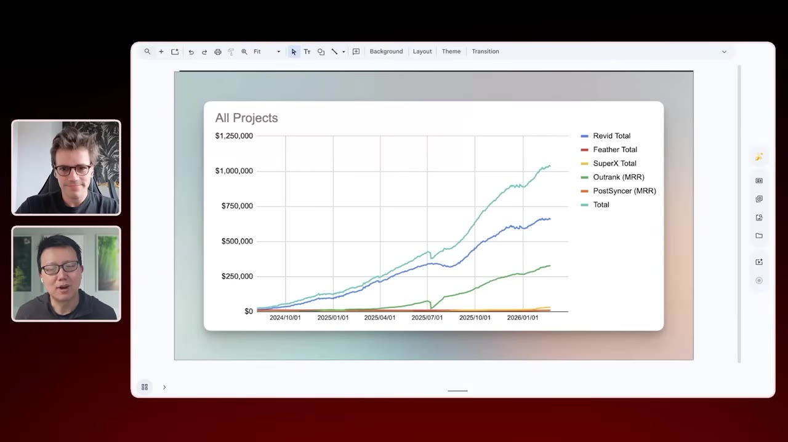
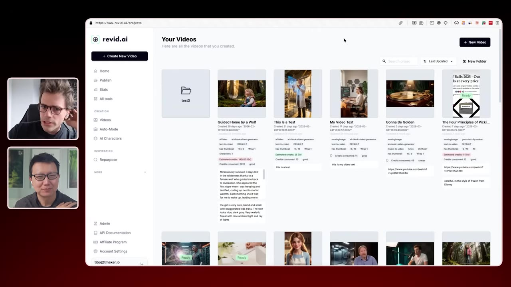
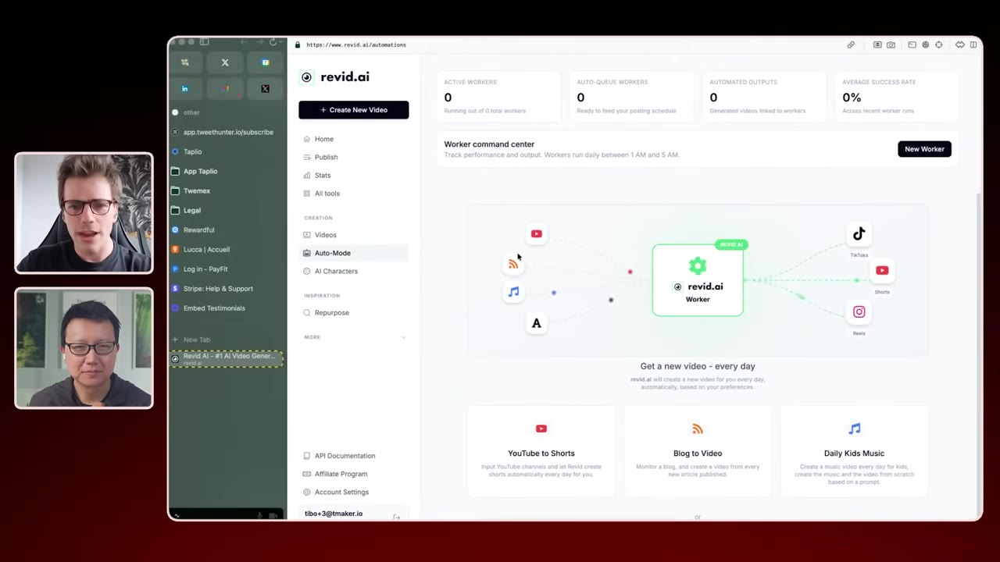
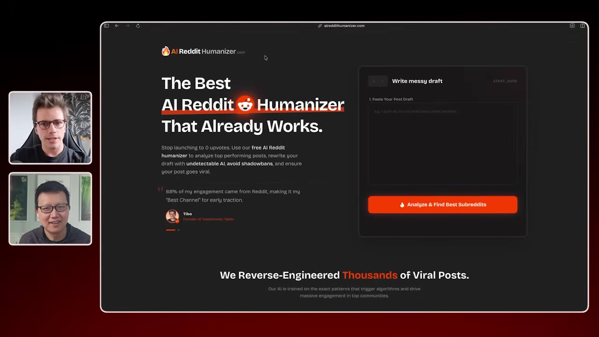
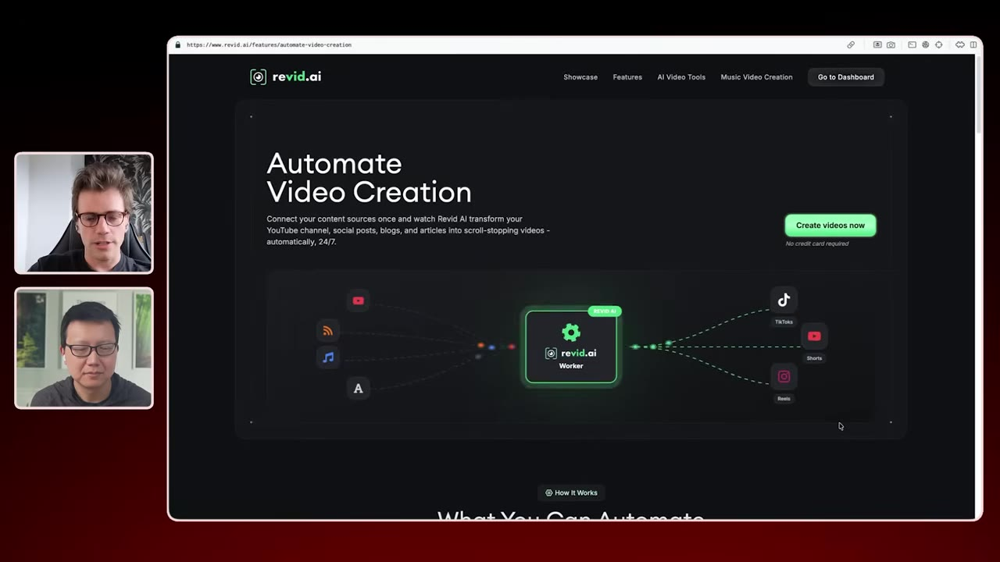
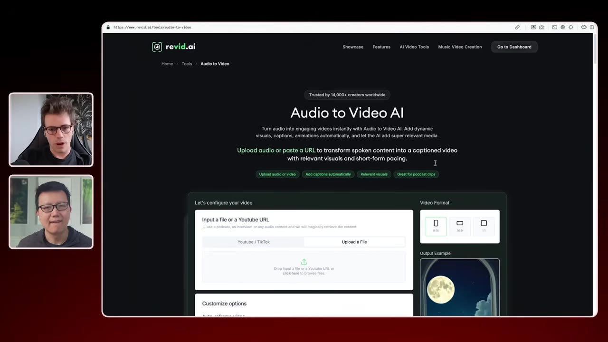
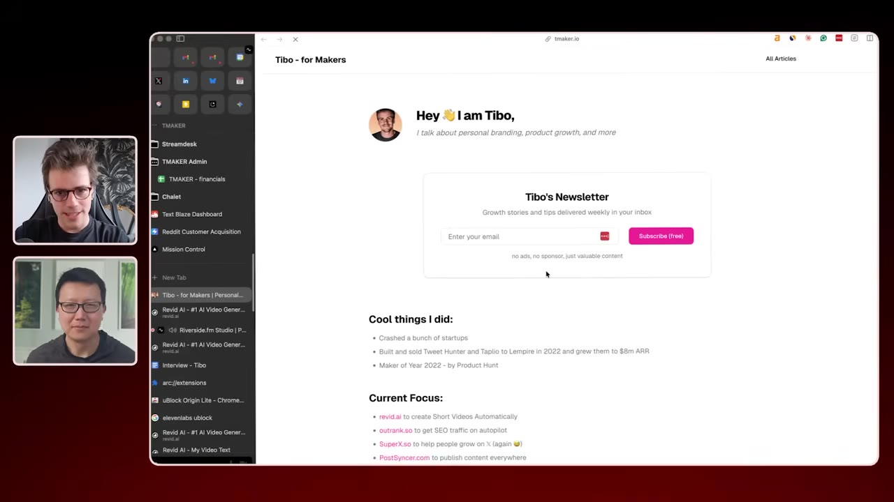

Tibo Louis-Lucas runs five separate online businesses pulling over $1 million per month — with a team of just a handful of contractors. He shares the playbooks that got him there: shipping one product per week until something stuck, pivoting Typeframe into the $600k/mo viral-video tool Rabbit, treating SEO as his permanent distribution layer, and pricing high ($50–$100/mo) to attract quality customers with low churn.
Watch on YouTubePeter opens by asking Tibo to walk through the revenue chart on screen — five products, five colored lines, all growing. Rabbit is the biggest at $600k+/month, Outrank (SEO) has carved its own path, and SuperX is climbing past $30k/month. Tibo's personal site, timaker.io, lists all his projects.

Tibo acquired Typeframe two years ago — a tool for making product demo videos doing $1–2k/month. He spent time trying to force-sell it as-is, the classic mistake of prioritizing being right over being successful.
But he kept his communication channel open with users. They were twisting the tool into something else: making viral shorts for social media. That's a strong signal. He rebranded, bought a new domain, and Rabbit was born — riding the wave of advancing AI video models at just the right moment.

Rabbit now offers more than a hundred tools for creating videos. The most successful use case? Music videos — drop a Spotify link or upload your music, and Rabbit auto-generates a full video ready to share.
The auto mode is the killer feature: point it at YouTube channels or blogs, and it automatically turns new content into short-form videos. Built by stitching together many 5-second AI clips with consistent characters and scenes — something that was nearly impossible when AI models only produced short clips.

Before his first acquisition, Tibo ran an experiment: ship one new project per week for four months until something stuck. Nine products failed. The tenth took off.
His validation playbook: spin up a single-feature tool, launch a landing page, charge from day one. If there's no revenue, there's no stickiness — and it would be a disaster to keep going.

You've got an alien brain at your beck and call. My backlog is totally empty. I have no idea what to build, and the one thing that gets into my backlog, I just give it to AI, and it's done in like 10 minutes.— Tibo Louis-Lucas
Focusing on quantity instead of quality leads in the end to better quality. The highest quality products from a series of many products is going to be higher quality than products where you focus on one and try to achieve higher quality.— Tibo Louis-Lucas
Tibo is convinced that one person can now do the job of 20 compared to five years ago. His stack:
The hardest part now isn't building — it's coming up with ideas. Ideas have become the scarce resource.

Despite all the "SEO is dead" noise, Tibo says SEO is the #1 acquisition channel for Rabbit. His strategy:

Tibo's rule for knowing when to pivot a product: monthly churn below 20% means there's something to build; above 40% means your product isn't sticky and no amount of acquisition will save you.
When he pivots, he locks existing customers out of the old platform and issues full refunds without question — but doesn't let them block the decision. He automates repetitive tasks (a {/refund} keyboard shortcut generates the full response), and hires just enough support as products grow.
